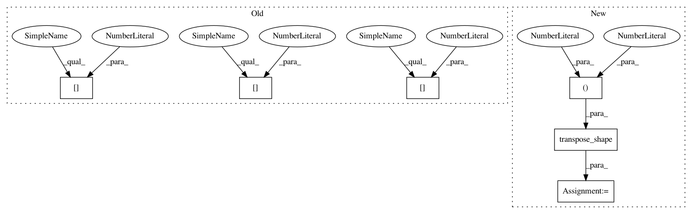

9aed521e6650384533f69d7b46c0210b45ae9391,keras/backend/tensorflow_backend.py,,spatial_3d_padding,#Any#Any#Any#,2250
Before Change
pattern = [
[0, 0],
[0, 0],
[padding[0][0], padding[0][1]],
[padding[1][0], padding[1][1]],
[padding[2][0], padding[2][1]]
]
else:
pattern = [
After Change
[padding[2][0], padding[2][1]],
[0, 0]
]
pattern = transpose_shape(pattern, data_format, spatial_axes=(1, 2, 3))
return tf.pad(x, pattern)
In pattern: SUPERPATTERN
Frequency: 3
Non-data size: 6
Instances
Project Name: keras-team/keras
Commit Name: 9aed521e6650384533f69d7b46c0210b45ae9391
Time: 2018-08-08
Author: gabrieldemarmiesse@gmail.com
File Name: keras/backend/tensorflow_backend.py
Class Name:
Method Name: spatial_3d_padding
Project Name: keras-team/keras
Commit Name: 9aed521e6650384533f69d7b46c0210b45ae9391
Time: 2018-08-08
Author: gabrieldemarmiesse@gmail.com
File Name: keras/backend/tensorflow_backend.py
Class Name:
Method Name: spatial_3d_padding
Project Name: keras-team/keras
Commit Name: 1068e173eafd15e5aa9f40b9f73590a7f5be4a84
Time: 2018-08-05
Author: gabrieldemarmiesse@gmail.com
File Name: keras/backend/cntk_backend.py
Class Name:
Method Name: conv3d_transpose
Project Name: keras-team/keras
Commit Name: 1068e173eafd15e5aa9f40b9f73590a7f5be4a84
Time: 2018-08-05
Author: gabrieldemarmiesse@gmail.com
File Name: keras/backend/cntk_backend.py
Class Name:
Method Name: conv2d_transpose